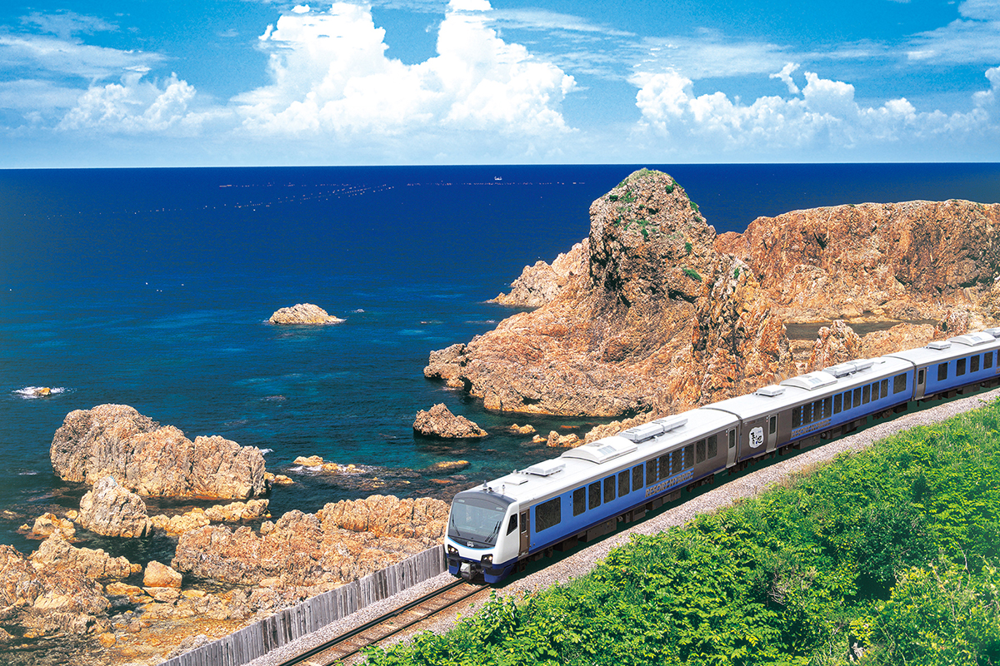
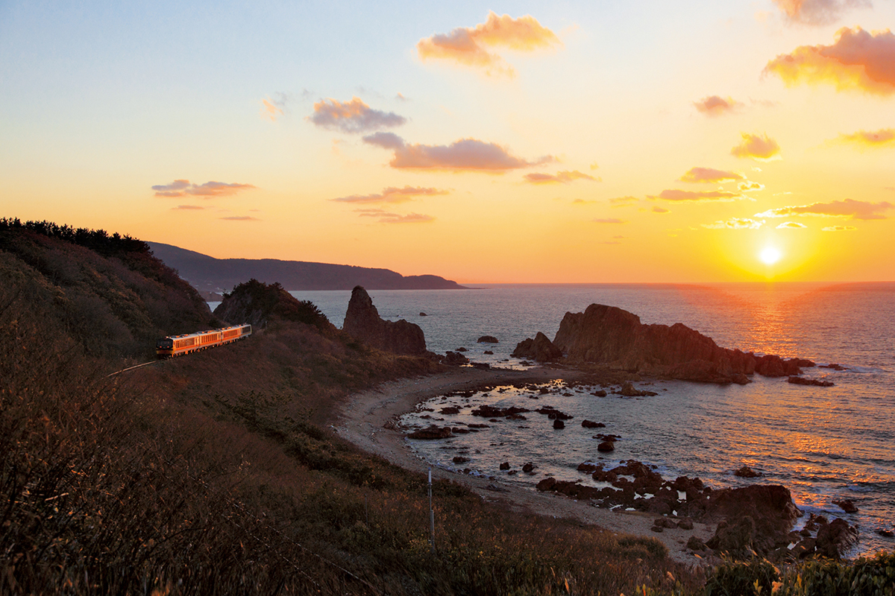
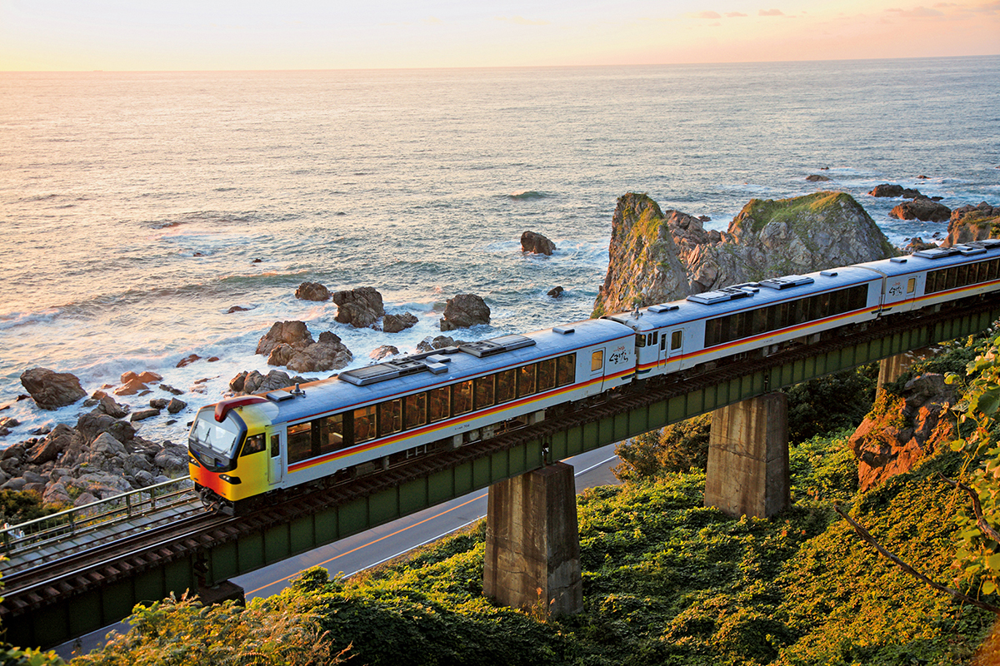

Префектура Акита · Носиро и побережье · железная дорога
Линия Гоно: поезд вдоль Японского моря из Акиты в Аомори

Линия Гоно соединяет север префектуры Акита с префектурой Аомори и больше половины пути идёт по самому краю Японского моря. Это одна из тех местных линий, ради которых стоит отправиться в поездку.
Маршрут
147 километров между горами и морем
Линия JR Гоно начинается на станции Хигаси-Носиро в городе Носиро на севере префектуры Акита и заканчивается на станции Кавабэ в префектуре Аомори. Её длина около 147 км. По пути поезд проходит у подножия гор Сираками из списка всемирного природного наследия ЮНЕСКО и у красивой горы Иваки.
Самая знаменитая часть линии начинается на станции Хигаси-Хатимори, ещё на территории Акиты. Отсюда до городка Адзигасава в Аомори, около 80 км, пути идут прямо вдоль берега, и линия Гоно считается одной из самых живописных железных дорог Японии.

Поезд
Resort Shirakami: большие окна и остановки ради вида
Если уж ехать по линии Гоно, то лучше на поезде Resort Shirakami. Это скорый поезд, поэтому к обычному билету нужно докупить только билет на место с резервированием. В отделке некоторых составов использовано дерево с этих мест: бук, акитская криптомерия и аоморская хиба. Окна большие, и пейзаж за ними видно во всю ширину.
У самых красивых участков побережья, например у берегов Юкиаидзаки и Сэндзёдзики, поезд специально замедляет ход. В некоторых рейсах в вагонах играют вживую на цугару-сямисэне, северном варианте японской лютни, или показывают традиционный кукольный спектакль Цугару.

Совет
Закат на станции Тодороки
Автор подборки из десяти любимых местных линий особенно запомнила закат на станции Тодороки: маленький деревянный вокзал стоит у самого моря. Поезда здесь останавливаются редко, но, по её словам, сюда стоит доехать. Станция уже в префектуре Аомори, а о горах Сираками, вдоль которых идёт линия, подробно рассказывает отдельная статья: Сираками.
Линия JR Гоно
- Как добраться
- от станции Хигаси-Носиро (префектура Акита) до станции Кавабэ (префектура Аомори), 147,2 км
- Сайт
- jreast.co.jp
Фото: JR East.